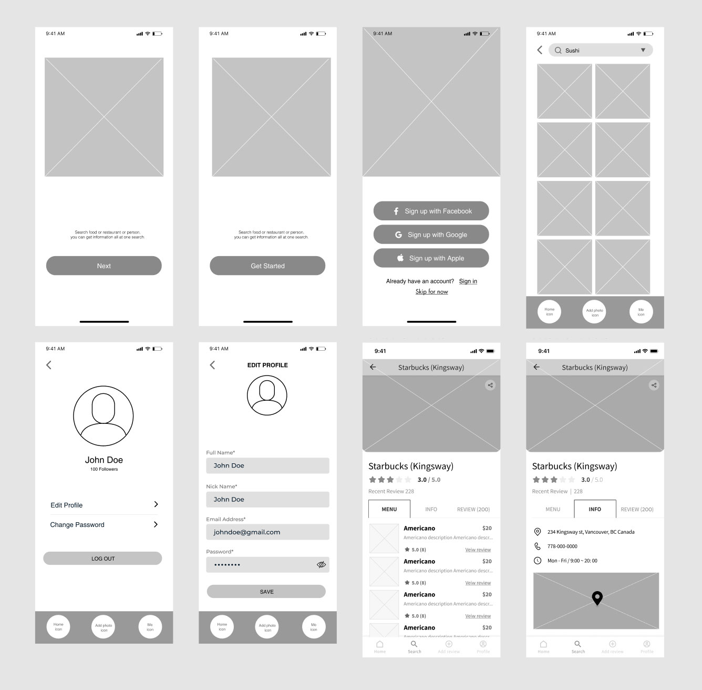
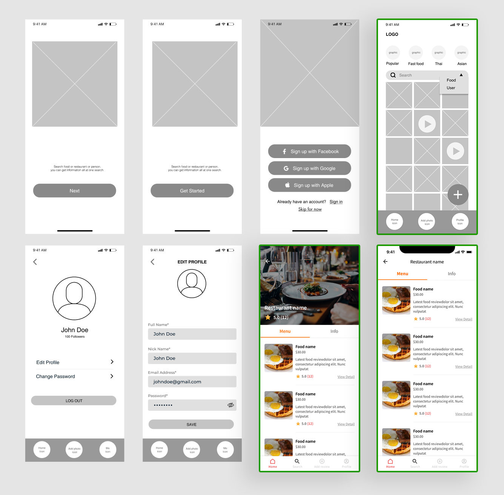

I designed a food review application that helps users find restaurants where they want to dine out. It's an Image-based application. People can write food reviews on the app and share all pictures of food.
- TIMELINE:
2 months - My ROLE:
Visual design, Branding - TEAM:
4 Developers, 2 Visual designer including me - DELIVERABLES:
Low(wireframe) & Hi fidelity mockup, Visual design, branding
Why Wafple?
We do eat 3 times a day. when I try to go to dine out, I usually Google it to find a restaurant but many restaurants do not have enough pictures of the food to choose from. what if we create a platform to provide more pictures of restaurant food?
Problem Statement
one of our team members found that people struggle when they search for a restaurant to dine out. there are not enough pictures of food provided online.
Our Solution
Provide a food review-based platform so people can help each other.
Market Research
Benchmarking: Instagram, Food delivery app (Doordash, Uber eat, etc)
Wireframe (Low-Fidelity Mockup)
Step1. I created wireframe
Step2. Team meeting: Discuss with developers and another designer to update user flow and layout
Step3. Updated layout and flow based on the team meeting
Before
After
Hi-Fidelity Mockup
WHAT I LEARNED
1. Understand UI Design Process